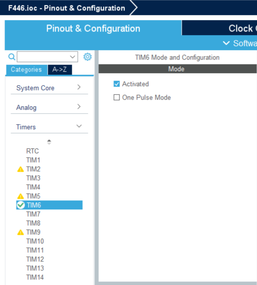
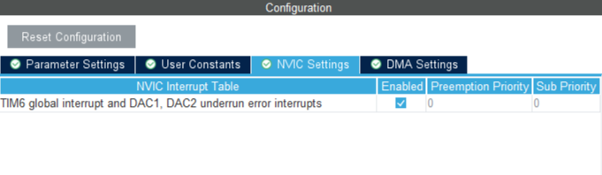

STM32資料 補足編 1
タイマー割り込みをやってみよう
タイマー機能を使って一定時間ごとに割り込み処理を発生させてみよう
定期的に実行したい時間にシビアなタスクの管理や、実行時間の測定にとっても使える
今回やること
少し新しい関数は出てくるけど、基本はDMAとPWMの足し算みたいな内容です
割り込み処理で1秒ごとにLEDを点滅させるプログラムを書いてみます
作業の流れ
- ピンを割り当てて、割り込みの設定をする
- wrapper.cppにコードを書き込む
- STM32にプログラムを書き込み実行する
- PCでデータを受信する
ピンの割り当て
今回はUSARTと内部タイマーであるTIM6を使う
TIM6はピンがないので、図のように選んで有効化してみよう
Configurationの設定
- 今回は内部クロックから1秒ごとにリセットされるタイマーを作成する
このボードのタイマーのクロックは84MHZなので、1秒に8400万回のクロックが発生する
そのため、8400クロックごとに1カウントアップするタイマーで1000回カウントすれば8400万回を数えることができる
そこでPreScalerを8399、Counter Periodを9999にする（0からカウントがスタートするので1引く）
割り込みの設定
今回はDMAを使わない割り込みなので、NVICからTIM6のGlobal Interruptsを有効化しておこう
（DMAを使わないUSARTの割り込みも同じように設定することができるので覚えておくといいかも?）
プログラム
今回はタイマーのスタートの関数と割り込み完了時に実行される関数を使用します
TIMのスタート
指定したタイマーを起動するための関数
HAL_TIM_Base_Start_IT(&htim6);この関数の引数
| 引数名 | 変数型 | 内容 |
|---|---|---|
| &htim | TIM_HandleTypeDef* | タイマーのポインタ（xはタイマーの番号） |
割り込み終了時に呼び出される関数
UARTのDMAで使ったCallBack関数と同じようなものです
void HAL_TIM_PeriodElapsedCallback(TIM_HandleTypeDef *htim)この関数の引数
この関数の引数はこちらから変える必要はないので毎回コピペで大丈夫
割り込みを発生されたタイマーの情報が *htimに入っているのでif文で判定することができる
| 引数名 | 変数型 | 内容 |
|---|---|---|
| &htim | TIM_HandleTypeDef* | タイマーのポインタ（xはタイマーの番号） |
サンプルコード
1sごとに割り込みを発生させて、LEDを点滅させるプログラムを作成した
#include "wrapper.hpp"
#include "tim.h"
void init(){
HAL_GPIO_WritePin(GPIOA,GPIO_PIN_5, GPIO_PIN_SET);
HAL_TIM_Base_Start_IT(&htim6);
}
void loop(){
HAL_Delay(1000);
}
//タイマーのカウントが最大値に達したときに呼び出される
void HAL_TIM_PeriodElapsedCallback(TIM_HandleTypeDef *htim){
//TIM6 1sの割り込み
if(htim == &htim6){
HAL_GPIO_TogglePin(GPIOA,GPIO_PIN_5);
}
}
終わりに
今回は、タイマーを使った割り込みをやってました！